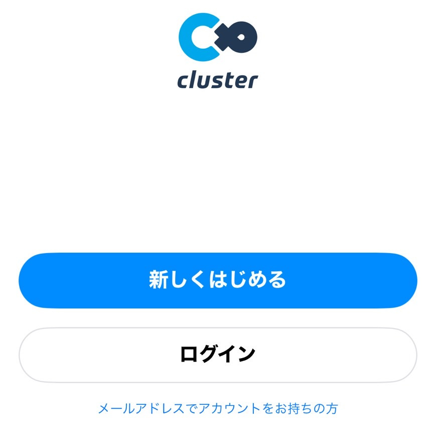
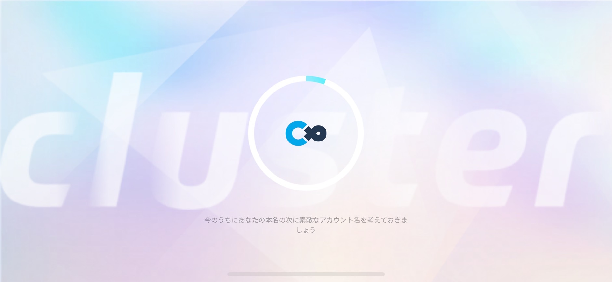
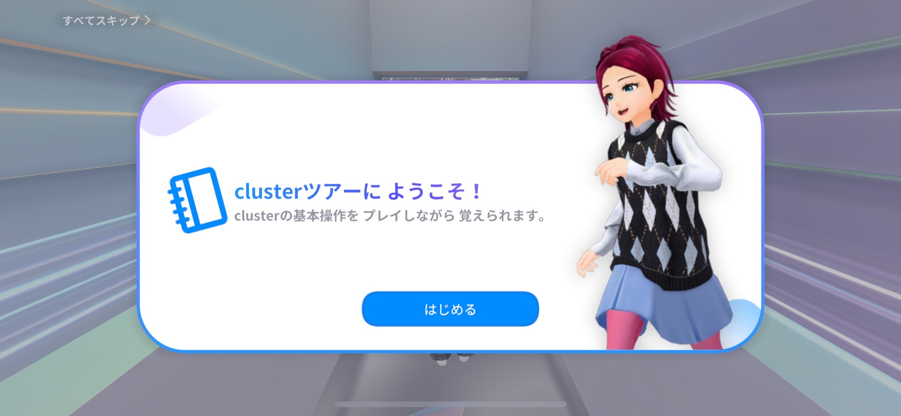

Cluster参加方法How to Access
| アプリを入れる | 下のリンクからApp Storeを開いてください。
|
|---|---|
| セットアップ | インストールが完了したら、「開く」を押し、起動します。  Clusterにログインしてください。登録されていない方は登録してください。 （中等生のGoogleアカウントでは登録できません。）  設定をガイドに沿って進めてください。  ツアーは基本操作に慣れるためのものです。飛ばしたい方は、左上の「すべてスキップ＞」をタップしてください。 |
| 学校への入り方 | 下のリンクをタップするとバーチャル空間にアクセスします。まだ公開されていません！公開までお待ちください。 |
| 楽しもう！ | 初期位置は校門前となります。奥に進むと、校舎がありますので、ワープゲートから学校内を回って見て楽しんでください！ 友達と一緒に入ることもできます！ぜひ、メタバースの世界を存分に楽しんでください！！ |